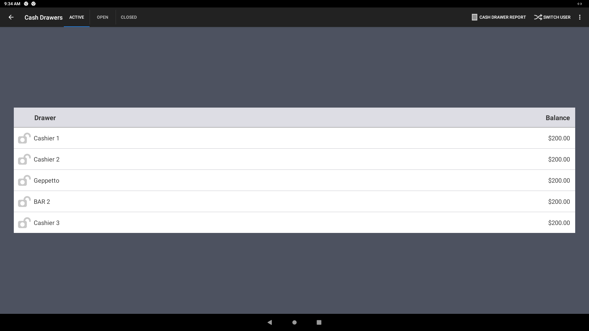

Cash management,
without the guesswork.
Making drawer states, everyday actions, and the restaurant-wide picture easier to understand.
- Work
- Product & interaction design
- Context
- Connected restaurant hardware
- Platform
- Android tablets & Toast Go
- Focus
- Clarity & task hierarchy

01 / Context
A cash drawer is more
than a balance.
Staff need to understand which drawer they are working with, what has happened to its cash, and what they can do next.
The redesign brought together three related jobs: understanding drawer status, acting on a drawer, and reviewing activity across the restaurant. My work focused on the product and interaction design of that experience.
Use clear labels, simplify the hierarchy, and put the most important jobs where people can find them.


02 / The overview
See the drawer.
Keep the bigger picture.
The new list simplified the hierarchy of drawer states and paired it with a side panel summarizing activity across the restaurant.
Clearer labels and actions reduced reliance on jargon. Instead of making the whole screen compete for attention, the overview separated the drawer list from the broader activity context.
Make status understandable.
A simpler hierarchy gives each drawer state a clearer place in the list.
Keep activity visible.
The restaurant-wide panel provides context alongside the drawers, rather than hiding that information inside an individual drawer.
03 / Everyday actions
Prioritize the job.
Explain the transaction.
Add and Remove cash came before No sale in the task hierarchy. Past cash activity remained a read-only history, separate from the actions that change a drawer.
The Add, Remove, and Close flows used direct actions and an informative side panel. Amount, comment, and an associated server, when applicable, gave each entry useful context.

Silent original recordings play and loop while visible. Use the controls to pause or seek. Reduced-motion preferences disable automatic playback.

Closed-drawer activity reports could be printed, connecting the on-screen history to the restaurant’s physical closeout work.
04 / Delivery & scope
One structure.
Different service surfaces.
The source design set covered FLEX 15-inch and 10-inch layouts, Toast Go, and light and dark themes. The common thread was a clear task hierarchy and an understandable record of cash activity.
The portfolio documents interface changes and device coverage. It does not provide a quantified outcome study for this project, so this case makes no claims about time savings, error reductions, or rollout results.
Sources and scope notes
Adapted from the original Cash Drawer 2.0 design sequence, dated H2 2023. The animations are the original GIFs, converted locally to controllable silent videos; original files remain available above.
- Drawer overview and state hierarchy
- Task prioritization and activity history
- Add, Remove, and Close workflows
Source links may require Figma access. This local editorial draft needs content and public-sharing review before publication.
Next case / Toast